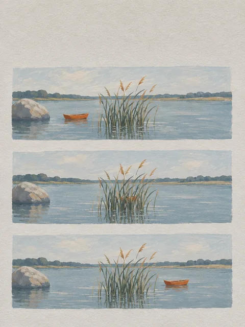
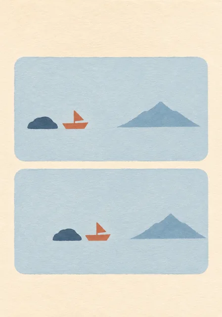

假定第一帧的湖、船和暖光都符合要求。先写下一项必须看片段才能回答的问题，再说你会比较哪里。
GAI · 5.3
视频生成与
时序检查
在同一短片中追踪主体和参照，决定选用还是补查
 VER. 2611
Built with impress.js
VER. 2611
Built with impress.js
GAI | M5 | 5.3 | 从生成要求到可查证据
首帧合格，能直接选用吗？
要求是一艘空木船从画面左向右漂移，同时保持固定摄影机
2/26
VIDEO GENERATION
GAI | M5 | 5.3 | 从生成要求到可查证据
验收时追踪主体、动作和连续性
用观察位置支持采用、暂停或补查决定
- ■先通看原片，再按三个固定时间段复查
- ■选前景、远岸和取景边界作为参照
- ■分别判断船的画面方向和镜头是否稳定
3/26
VIDEO GENERATION
GAI | M5 | 5.3 | 从生成要求到可查证据
文生视频以文本约束时序输出
提示里的场景、主体、动作和镜头用于引导模型生成连续图像
本节原片来自一次已保存的文生视频运行。提示要求左到右、固定镜头；这些是待检验目标。
检查输出时把提示词转成可观察问题，例如船和近岸之间的位置关系是否随时间改变。
4/26
VIDEO GENERATION
GAI | M5 | 5.3 | 从生成要求到可查证据
图生视频从一张或多张图获得条件
参照图像为开场构图、主体外观等提供具体信息
| 生成任务 | 输入如何约束视频 |
|---|---|
| 文生视频 | 用文字描述山湖、日出、船和预期动作 |
| 图生视频 | 在输入图上约束起始画面或外观，动作仍需单独检查 |
| 本课原件 | 实际文生视频；图生视频作为方法比较 |
5/26
VIDEO GENERATION
GAI | M5 | 5.3 | 从生成要求到可查证据
时序一致性关心相邻画面怎么接
同一船的形状、位置、遮挡与背景关系应足以解释前后变化
| 观察 | 需要进一步判断 |
|---|---|
| 船短暂被前景遮住后再出现 | 可与遮挡关系和行进路径相符 |
| 船在相邻画面突然变化或消失 | 核是否被挡、切镜或出现生成跳变 |
| 水面反光改变 | 可由水波造成，找稳定参照再判镜头 |

6/26
VIDEO GENERATION
GAI | M5 | 5.3 | 看全片，再按时间复查
固定输入给出同一片段的边界
VID-008 是 49 帧、24 帧/秒的无声文生视频，容器约 2.042 秒
- ■通看只使用原 MP4，建议从头到尾播放
- ■随后检查 0–0.7、0.7–1.4、1.4–2.042 秒
- ■描述 VTT 供阅读替代，记录自己是否实际看过原片
7/26
TIME EVIDENCE
GAI | M5 | 5.3 | 看全片，再按时间复查
从头看到尾再做时间标记
全片可重复播放，片尾 2.042 秒为容器时长的近似值
8/26
TIME EVIDENCE
GAI | M5 | 5.3 | 看全片，再按时间复查
49 帧表示有 49 张画面
24 帧每秒下，49 个帧时长约为 2.042 秒
第一帧起点到第 49 帧起点只跨 48 个间隔，即 2.000 秒。最后一帧仍有自己的显示时间。
报告播放范围用原卡给定的容器时长。抽帧时另外记所看的实际时间点。
9/26
TIME EVIDENCE
GAI | M5 | 5.3 | 看全片，再按时间复查
先记录观察，再给原因
时间、观察、可能解释和置信范围可写在同一行
| 区间 | 当段要复查的问题 |
|---|---|
| 0–0.7 秒 | 主体初始位置与外观如何，哪一处可作比较基准 |
| 0.7–1.4 秒 | 船相对该基准往哪变，是否出现跳变 |
| 1.4–2.042 秒 | 复核船的末段位置，主要背景线索是否连续 |
10/26
TIME EVIDENCE
GAI | M5 | 5.3 | 看全片，再按时间复查
全片观察和抽帧回答的范围不同
首、中、末三个点帮助定位，但点与点之间仍可能有短暂变化
先全程播放找可疑时间，再暂停或逐帧检查该处。所用播放器不能逐帧时，记下观察精度和它影响的判断。
只读描述或只看若干画面，都在记录范围里标明。
11/26
TIME EVIDENCE
GAI | M5 | 5.3 | 看全片，再按时间复查
把两个运动判断分开写
船相对景物的位移和整幅生成画面的位移需要不同依据
| 判断 | 可对照的线索 |
|---|---|
| 主体在画面中的方向 | 船沿与近岸标记的相对位置，其边缘或同一特征 |
| 画面是否呈现镜头运动 | 远岸标志和画框边缘是否相对移动，多个稳定点是否同向变化 |
| 仍未确定 | 船太小、参照移动或画面有局部形变时，先留待查 |
12/26
TIME EVIDENCE
GAI | M5 | 5.3 | 解释差异并作选用决定
用一组构造位置演练方法
这里是额外的纸面示范，数据不来自 VID-008
| 时间 | 船艏水平坐标 | 近岸石标 | 远岸峰顶 |
|---|---|---|---|
| 0.30 秒 | 0.42 | 0.35 | 0.76 |
| 0.95 秒 | 0.45 | 0.35 | 0.76 |
| 1.70 秒 | 0.48 | 0.35 | 0.76 |
13/26
DECISION
GAI | M5 | 5.3 | 解释差异并作选用决定
位移结论要说明比较条件
横坐标从画框左到右由 0 增至 1
石标和峰顶在三个取样点的坐标不变。船艏由 0.42 到 0.48，支持这些点上的相对右移；差值对应画面宽度的 6%。
这三个点只支持取样时刻的比较。整体连续性仍要检查其余时段和跨段连接。
14/26
DECISION
GAI | M5 | 5.3 | 解释差异并作选用决定
如果参照也在移动，需要再定位
让船和远岸同向移动，会出现另一种解释
若两个岸景标志同时右移，船在画框内右移可能由画面移动造成。先比较船与稳定物体的相对位移，再看边界、尺度和遮挡。
如果所有可用参照都变化，当前样片可以记方向或镜头无法判定。

15/26
DECISION
GAI | M5 | 5.3 | 解释差异并作选用决定
读描述 VTT 可得到有限的筛查结果
这份原描述写到船位置变化小，方向需结合参照判断
| 依据 | 可怎么写 |
|---|---|
| 描述 VTT | 读到课程描述的小船、远岸与反光。方向和镜头仍待本人看片 |
| 实际完整片 | 记播放器范围、三个时段、各参照和待查位置 |
| 只有抽帧 | 指明具体抽帧时刻，在其余范围保留待看 |
16/26
DECISION
GAI | M5 | 5.3 | 解释差异并作选用决定
画面悦目可以与采用条件并存
用途决定必须先确认哪一项证据
| 候选用途 | 可说明的采用决定 |
|---|---|
| 讲解 AI 生成湖景构图 | 在明确 AI 生成和练习用途后，可按已查范围有限选用 |
| 证明船稳定向右且镜头固定 | 方向或镜头证据不足时暂停，列应复看的时间及参照 |
| 制作带解说成片 | 本素材无声，声音和合成后同步进入新的检查 |
17/26
DECISION
GAI | M5 | 5.3 | 解释差异并作选用决定
变式让两个稳定标志向右移动
保持三个船艏坐标，两个岸景参照改为同向移动
近岸石标依次为 0.35、0.38、0.41，远岸峰顶为 0.76、0.79、0.82。
先算船艏相对石标三点的差。还能说船相对近岸明显右移吗？
18/26
DECISION
GAI | M5 | 5.3 | 解释差异并作选用决定
变式中的相对差保持 0.07
三个点的船艏与石标差相同，两个岸景标志同向变化
这可提示画面整体向右移动。需要更多稳定点与跨段观察才能说明镜头运动和连续性。
这是反证练习，原湖景需按原时间段看片。
19/26
DECISION
GAI | M5 | 5.3 | 完成原任务与回取
依原卡完成三步检查
建议 30 分钟，免费本地播放器即可开始
- ■先通看 VID-008，再按三段记主体、动作和连续性
- ■用前景、远岸与取景边界分别说明方向和镜头依据
- ■选用、暂停或补查，交证据单并保留未判定项
20/26
PRACTICE
GAI | M5 | 5.3 | 完成原任务与回取
四项形成性自查各 0 或 1 分
总 4 分用于形成性自查，证据不足先登记待补
| 项目 | 可查证据 |
|---|---|
| C1 观察范围 | 说明完整播放、抽帧和阅读分别做了哪些 |
| C2 时间证据 | 每条实看片段观察带真实时点或区间 |
| C3 两个判断 | 相对参照支撑船方向与镜头稳定判断，或说明哪个证据不足 |
| C4 采用边界 | 保留未判定并说明选用条件及补查动作 |
21/26
PRACTICE
GAI | M5 | 5.3 | 完成原任务与回取
证据单可带一张三段观察表
同一份证据单保留四部分，观察表可直接放入
- ■执行前判断与范围
- ■输入定位和实际观察，记播放器与参照
- ■修改后的判断和采用条件
- ■实际方法、未测内容、本人和 AI 贡献
22/26
PRACTICE
GAI | M5 | 5.3 | 完成原任务与回取
看片结果进入后续整合
保留原视频版本与判断，进入声画整合前再查哪些条件变化
如果换片、改变裁切比例或增加配音，原观察只对应旧片。正式发布还要查素材来源、同步和标识。
本节只检验一段无声生成片的局部时序。
23/26
PRACTICE
GAI | M5 | 5.3 | 核对关键判断
给下位剪辑者复述采用依据
按用途说明已查和仍需补查的范围
- ■说出完整通看与三个时间段怎样配合
- ■分别说出船的方向与镜头稳定可用哪项证据
- ■用一个条件解释何时应暂停采用
24/26
RETRIEVAL
GAI | M5 | 5.3
本节思维导图
25/26
MIND MAP
GAI | M5 | 5.3
本节问题
- 01为什么提示里写了固定镜头，仍要检查远岸和取景边界？
- 02船和近岸同时向右移 0.06 个画幅，能从中判断什么？
- 03只有替代描述时，如何交付一份可供补查的记录？
26/26
QUESTIONS